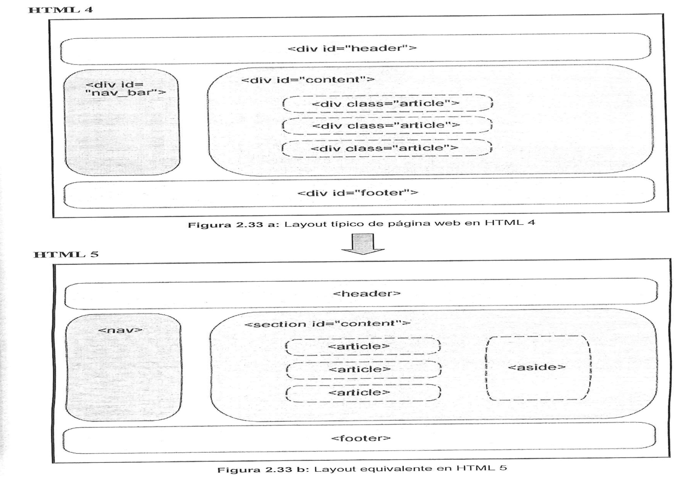

1. Identificación de elementos: Atributos id y class
Para que las hojas de estilo (CSS) y los scripts (JavaScript) puedan localizar, estilizar o manipular elementos específicos del documento, HTML proporciona dos atributos universales:
id (Identificador Único)
- Asigna un nombre que debe ser estrictamente único dentro de todo el documento HTML (no pueden existir dos elementos con el mismo
id). - Permite crear destinos de hipervínculos ancla (p. ej.
<a href="#contacto">enlaza con<section id="contacto">). - Es la vía más rápida para seleccionar un elemento en JavaScript:
document.getElementById("miElemento"). - Asocia etiquetas con campos en formularios mediante
<label for="email">e<input id="email">.
<!-- id: único e irrepetible -->
<main id="contenido-principal">...</main>class (Clasificador Reutilizable)
- Asigna una categoría o clase que puede ser compartida por múltiples elementos del documento.
- Un mismo elemento puede pertenecer a múltiples clases simultáneamente, separando sus nombres con un espacio.
- Es la base fundamental del diseño web modular y de frameworks como Bootstrap (p. ej.
class="btn btn-primary shadow-sm"). - En CSS se selecciona con un punto (
.tarjeta) y en JavaScript conquerySelectorAll(".tarjeta").
<!-- class: reutilizable y combinable -->
<button class="btn btn-primary rounded-pill">Enviar</button>2. Contenedores genéricos: <div> y <span>
Cuando necesitamos agrupar elementos exclusivamente para aplicarles estilos visuales, crear cuadrículas con CSS (Flexbox o Grid) o manipularlos con JavaScript, pero ningún elemento semántico representa su significado, recurrimos a los contenedores genéricos neutros:
| Etiqueta | Tipo de elemento | Comportamiento y Uso Recomendado |
|---|---|---|
<div> |
Elemento de bloque (block) | Genera un salto de línea antes y después, ocupando por defecto todo el ancho disponible. Sirve para envolver grandes conjuntos de elementos (párrafos, títulos, listas) y crear cajas maquetadas con bordes, rellenos o fondos. |
<span> |
Elemento en línea (inline) | Fluye dentro del texto normal sin provocar saltos de línea, ocupando únicamente el espacio de su contenido. Se emplea para aplicar estilos tipográficos específicos (color, tamaño, negrita) a una palabra o frase concreta dentro de un párrafo. |
Ejemplo de código:
<!-- <div> agrupa un bloque visual completo -->
<div class="p-3 bg-light border rounded">
<h4>Aviso Importante</h4>
<p>
El examen final será el
<!-- <span> estiliza un fragmento en línea -->
<span class="badge bg-danger">25 de junio</span>
a primera hora.
</p>
</div>Resultado en el navegador:
Aviso Importante
El examen final será el 25 de junio a primera hora.
3. El modelo histórico de "Capas" (HTML 4) y Prácticas del Curso
A mediados de los años 2000, para superar la antigua maquetación con tablas, se popularizó el diseño web basado en capas: se dividía la página en bloques <div> con identificadores que representaban las partes de la web.
El esquema tradicional enseñado en las prácticas de la asignatura sigue esta estructura:
<body>
<!-- Capa contenedora general -->
<div id="contenedor">
<!-- Capa superior: cabecera y título -->
<div id="cabecera">
<h1>Título del Sitio Web</h1>
</div>
<!-- Capa de navegación: menú e índice -->
<div id="indice">
<ul>
<li><a href="#">Inicio</a></li>
<li><a href="#">Ejercicios</a></li>
</ul>
</div>
<!-- Capa principal: contenido del documento -->
<div id="cuerpo">
<p>Contenido principal de la página...</p>
</div>
<!-- Capa inferior: pie de página -->
<div id="pie">
<p>© 2026 - Departamento de Informática</p>
</div>
</div>
</body>
Figura 1. Esquema estructural del Ejercicio 20 (capas clásicas).
Ejercicio 19: Estructuración con capas
Reorganización de los ejercicios del 1 al 10 aplicando las capas contenedor, cabecera, indice, cuerpo y pie.
Ejercicio 20: Esqueleto visual de cajas
Creación de la plantilla base de capas aplicando bordes visuales y márgenes mediante CSS para verificar la estructura.
Ver Ejercicio 204. La Revolución Semántica de HTML5: Superando la "Divitis"
El problema de la "Divitis" (Div Soup):
En páginas construidas solo con <div>, el navegador, Google y los lectores de pantalla veían un documento plano sin significado. Cada desarrollador nombraba sus capas como quería (id="cabecera", id="header", id="top", id="banner"). Para resolver esta anarquía, HTML5 introdujo etiquetas semánticas con significado estandarizado universal.

Figura 2. Anatomía semántica de un sitio web moderno en HTML5.
| HTML 4 (Clásico) | HTML5 (Semántico Estándar) | Significado y Función en la Arquitectura Web |
|---|---|---|
<div id="cabecera"> |
<header> |
Cabecera introductoria del sitio o de una sección (contiene logotipo, títulos principales y buscador). |
<div id="menu"> |
<nav> |
Contenedor de enlaces de navegación principal del sitio web. |
<div id="cuerpo"> |
<main> |
Contenido principal y único del documento. Solo puede existir un único <main> activo por página. |
<div class="seccion"> |
<section> |
Sección temática genérica dentro de un documento. Casi siempre debe comenzar con un encabezado (<h2> o <h3>). |
<div class="articulo"> |
<article> |
Pieza de contenido autocontenida que tiene sentido por sí misma (noticias, entradas de blog, posts, fichas de producto). |
<div id="lateral"> |
<aside> |
Contenido tangencial o complementario (barra lateral, enlaces relacionados, publicidad, biografías breves). |
<div id="pie"> |
<footer> |
Pie de página o de una sección (copyright, datos de contacto, enlaces legales y redes sociales). |
Esqueleto Semántico Moderno en HTML5:
<!DOCTYPE html>
<html lang="es">
<head>
<meta charset="UTF-8">
<title>Portal Web Semántico</title>
</head>
<body>
<header>
<h1>Lenguajes de Marcas</h1>
<nav>
<ul>
<li><a href="#">HTML5</a></li>
<li><a href="#">CSS3</a></li>
</ul>
</nav>
</header>
<main>
<article>
<h2>Introducción al Desarrollo Web Moderno</h2>
<p>Aprender las bases de la semántica garantiza páginas accesibles y optimizadas.</p>
</article>
</main>
<aside>
<h3>Recursos Recomendados</h3>
<p>Enlaces a la documentación oficial de MDN y W3C.</p>
</aside>
<footer>
<p>© 2026 - Departamento de Informática</p>
</footer>
</body>
</html>